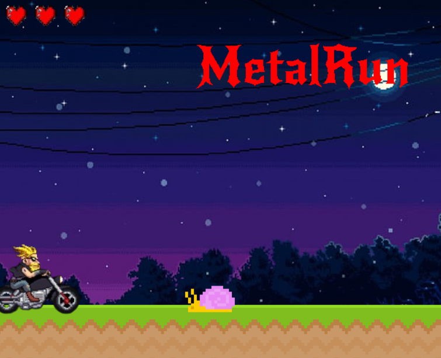

HI GANG
well guys idk what to say but hello
but well all i can say right now that i am working
on this cool game called MetalRunner ik link is
just to my profile page cause yeah i have not finished
working on it but if u got cool ideas just text me in dms
and thats it
this is main menu
this is what til looks like right now
okay bye